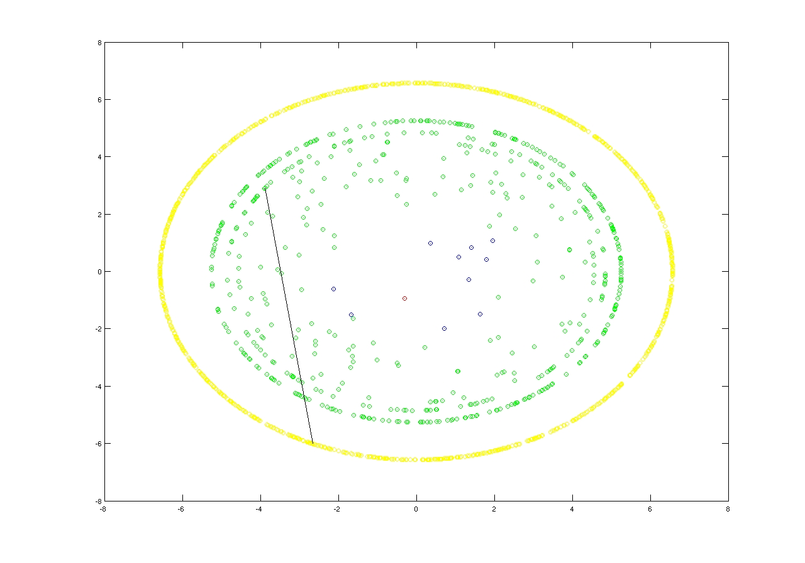
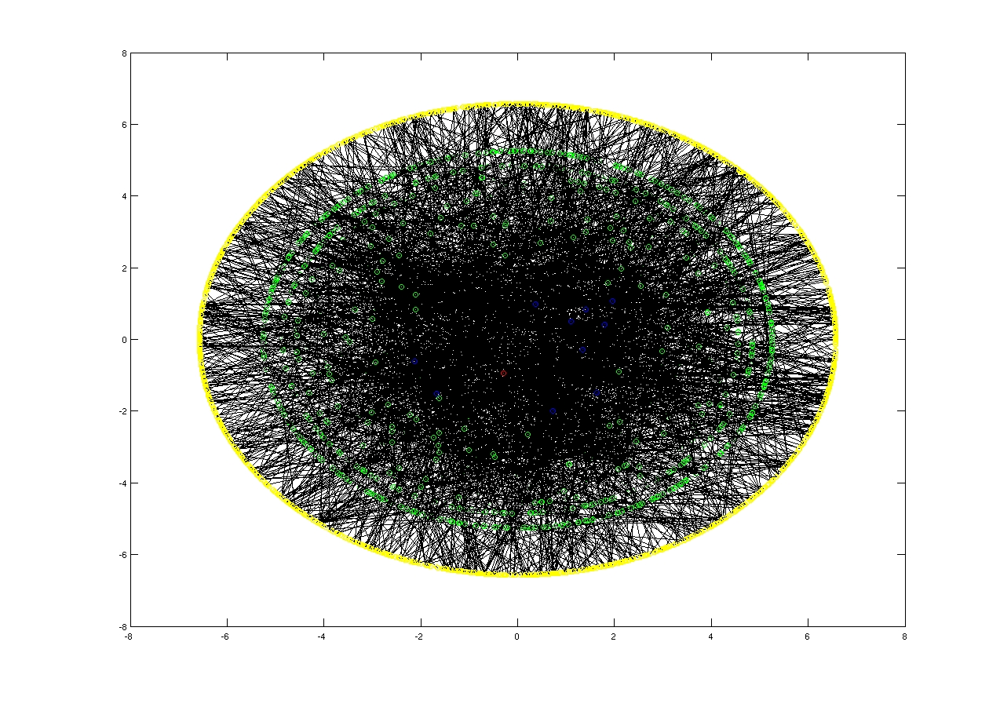
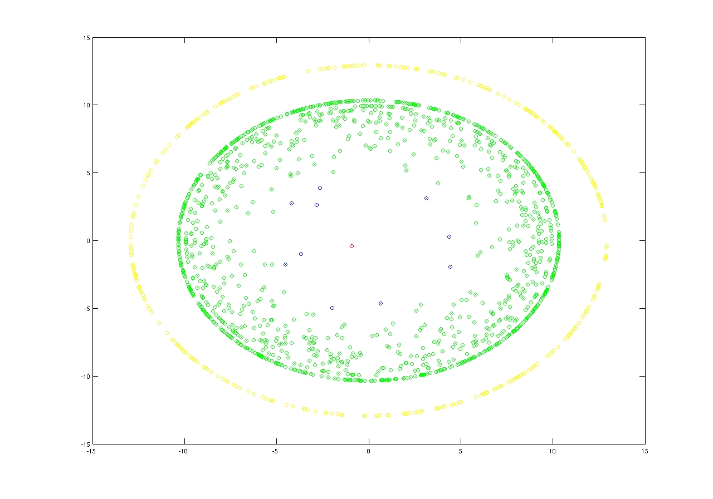
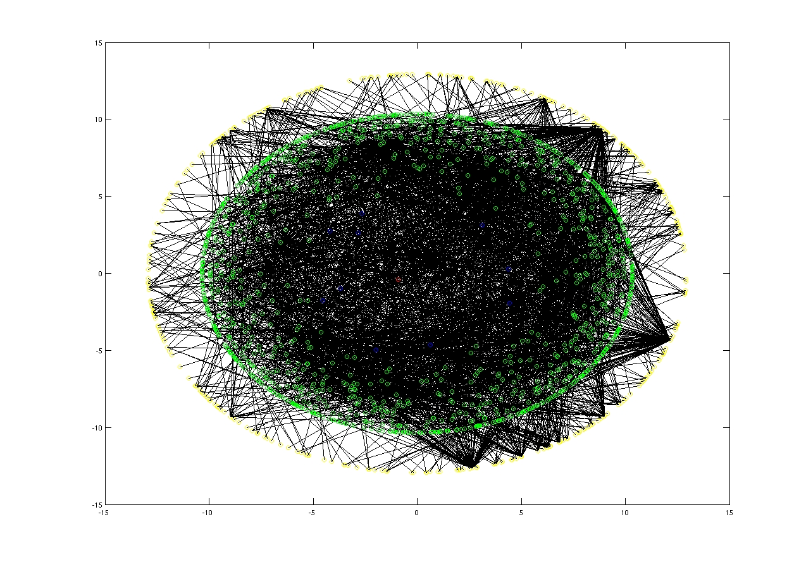

(a.k.a WING Friday
Lunch)
Overview
This is a crazy idea we had when our
networking group organized the weekly Friday lunch. We used anonymized
data (I think one week of data)
from our mail server and we plotted the relations between the members of our community (computer science department at Boston University). We
used the gravity model where the member of the community that contributes more are closer to the center of the ring. The one that contributes more
is denoted with a red cycle and the next top 10 are denoted with blue cycles. The rest nodes that are related with other nodes are denoted with green
cycles, and those that are not peering with any other nodes are denoted with yellow cycles.
from our mail server and we plotted the relations between the members of our community (computer science department at Boston University). We
used the gravity model where the member of the community that contributes more are closer to the center of the ring. The one that contributes more
is denoted with a red cycle and the next top 10 are denoted with blue cycles. The rest nodes that are related with other nodes are denoted with green
cycles, and those that are not peering with any other nodes are denoted with yellow cycles.
Formally for any node n we calculate its radius, and the new coordinates as follows:


We illustrated three types of relations:
- Directed Peering : Nodes that are peering more are closer to the
center of the ring .
- Receiving Gravity : Nodes that are receiving more e-mails are
closer to the center of the ring.
- Sending Gravity : Nodes that are sending more e-mails are closer
to the center of the ring.
For any further information or bug report please send e-mail to Georgios Smaragdakis


Receiving Gravity
code: receiver_traffic.m

